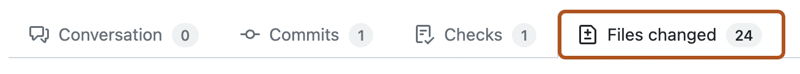

You can manually approve workflow runs that have been triggered by a contributor's pull request.
Workflow runs triggered by a contributor's pull request from a fork may require manual approval from a maintainer with write access. You can configure workflow approval requirements for a repository, organization, or enterprise.
Workflow runs that have been awaiting approval for more than 30 days are automatically deleted.
Approving workflow runs on a pull request from a public fork
Maintainers with write access to a repository can use the following procedure to review and run workflows on pull requests from contributors that require approval.
Under your repository name, click Pull requests.
In the list of pull requests, click the pull request you'd like to review.
On the pull request, click Files changed.

Inspect the proposed changes in the pull request and ensure that you are comfortable running your workflows on the pull request branch. You should be especially alert to any proposed changes in the .github/workflows/ directory that affect workflow files.
If you are comfortable with running workflows on the pull request branch, click the button in the upper right corner labeled Awaiting approval, which will open the Merge status panel.